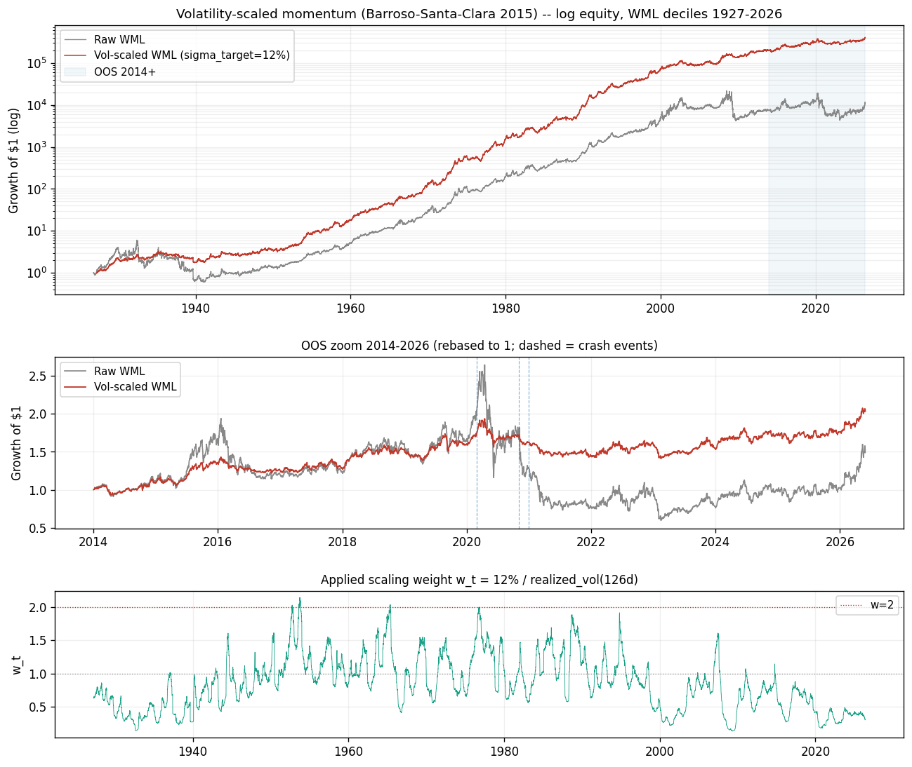

複驗原文的核心機制：用近期已實現波動把動能部位縮放到固定風險預算（σ_target 12%、126 日波動、t+1 滯後），事前在高波動期降槓桿。 全部常數取自原文，零參數搜索。主序列為 Ken French「10 動能組合（日頻）」的 WML＝decile 10 − decile 1。 重點放在 2014–2026 真 out-of-sample：Sharpe（日頻年化）0.26 → 0.52、MDD −77.6% → −27.2%、最差月 −27.5% → −9.3%； 配對循環 block bootstrap（10,000 次）Sharpe 差 95% 信賴區間 [+0.04, +0.45] 不含 0——OOS 改善統計顯著。 in-sample（1927–2011）也複現原文的方向（Sharpe 0.54 → 0.94、超額峰態塌陷）。 這頁是「edge 存活研究」候選之一；它只回答風險管理機制的存活性與顯著性，不回答可交易性（見侷限）。
| 指標 | 原文 Raw → Scaled（宣稱） | 本複驗 Raw → Scaled（實測） | 判定 |
|---|---|---|---|
| Sharpe（月頻年化） | 0.53 → 0.97 | 0.54 → 0.94 | 方向一致 |
| 超額峰態（月頻） | 18.24 → 2.68 | 7.75 → 0.95 | 方向一致 |
| 偏態（月頻） | −2.47 → −0.42 | -0.37 → -0.06 | 方向一致 |
| 指標 | Raw WML | Vol-scaled |
|---|---|---|
| CAGR | 3.28% | 5.90% |
| 年化波動 | 33.06% | 12.76% |
| Sharpe（月頻年化） | 0.26 | 0.52 |
| Sharpe（日頻年化） | 0.26 | 0.51 |
| 偏態（月頻） | -0.37 | 0.10 |
| 超額峰態（月頻） | 1.52 | 0.40 |
| MDD | -77.56% | -27.16% |
| 最差月 | -27.50% | -9.34% |
| 事件 | Raw 報酬 | Scaled 報酬 | 進場 w | 窗內均 w |
|---|---|---|---|---|
| 2020-03 COVID | +26.9% | +10.3% | 0.41 | 0.41 |
| 2020-11 疫苗輪動 | -23.7% | -4.6% | 0.20 | 0.19 |
| 2021-01 GME 逼空 | -5.6% | -1.2% | 0.22 | 0.22 |

| 樣本 | Sharpe Raw | Sharpe Scaled | 偏態 Raw | 偏態 Scaled | 超額峰態 Raw | 超額峰態 Scaled | MDD Raw | MDD Scaled |
|---|---|---|---|---|---|---|---|---|
| 全期 1927-2026 | 0.49 | 0.88 | -0.37 | -0.02 | 6.78 | 1.05 | -90.0% | -46.8% |
| 1927-2011（in-sample） | 0.54 | 0.94 | -0.37 | -0.06 | 7.75 | 0.95 | -90.0% | -46.8% |
| 2012-2026 | 0.25 | 0.49 | -0.38 | 0.10 | 1.83 | 0.49 | -77.6% | -27.2% |
| 2014-2026（真 OOS） | 0.26 | 0.52 | -0.37 | 0.10 | 1.52 | 0.40 | -77.6% | -27.2% |